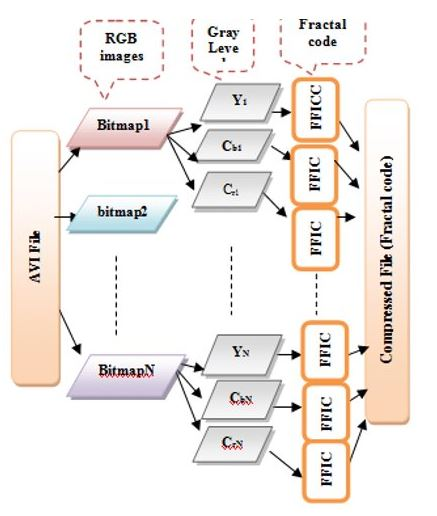

El formato avi permite almacenar simultáneamente un flujo de datos de video y varios flujos de audio. El
formato concreto de estos flujos no es objeto del formato AVI y es interpretado por un programa externo
denominado códec. Es decir, el audio y el video contenidos en el AVI pueden estar en cualquier formato
(AC3/DivX, o MP3/Xvid, entre otros). Por eso se le considera un formato contenedor.
El formato de archivo AVI fue creado por Microsoft en noviembre de 1992 con la intención de proporcionar un
formato de archivo de audio y video avanzado y robusto para el sistema operativo Windows.
Microsoft usó AVI como contenedor de archivos para un nuevo marco que agregó reproducción de video digital a
su sistema operativo. La compañía lanzó AVI como un complemento para Windows 3.1. En cuatro años, el grupo
Maxtor OpenDML desarrolló una nueva extensión de formato de archivo para AVI (AVI 2.0).
Paso 1: lee el archivo AVI.
Paso 2: divide el archivo AVI en una serie de fotogramas (imágenes de mapa de bits (BMP)).
Paso 3: para cada cuadro haz lo siguiente:
Paso 4: lee la imagen en color (fotograma) y conviértela a YCbCr espacio de color.
Paso 5: aplica FFIC para comprimir cada componente (Y, Cb y Cr)
Paso 6: se cuantifica el código fractal, se aplica DPCM para los componentes (Y, Cb y Cr)
Paso 7: guarde los códigos fractales para los componentes (Y, Cb,y Cr) en el archivo comprimido.Paso 8: ir
al paso 3
Paso 8: ir al paso 3
